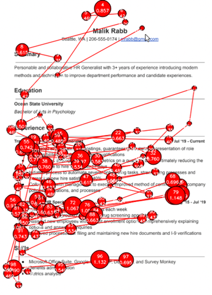
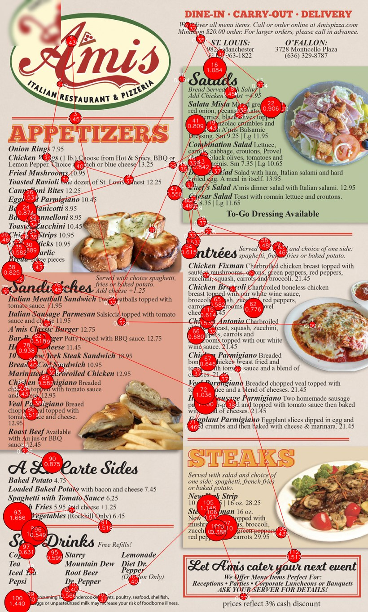
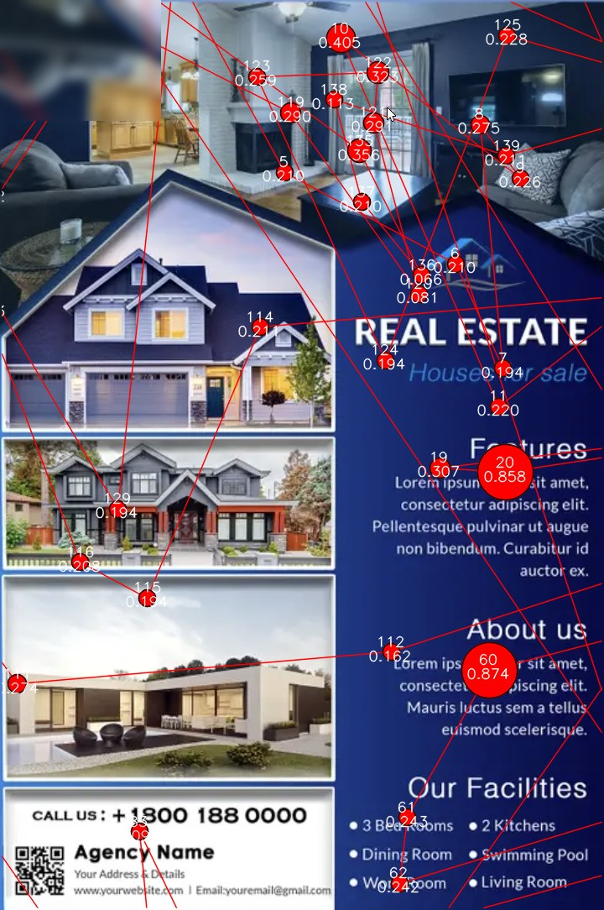
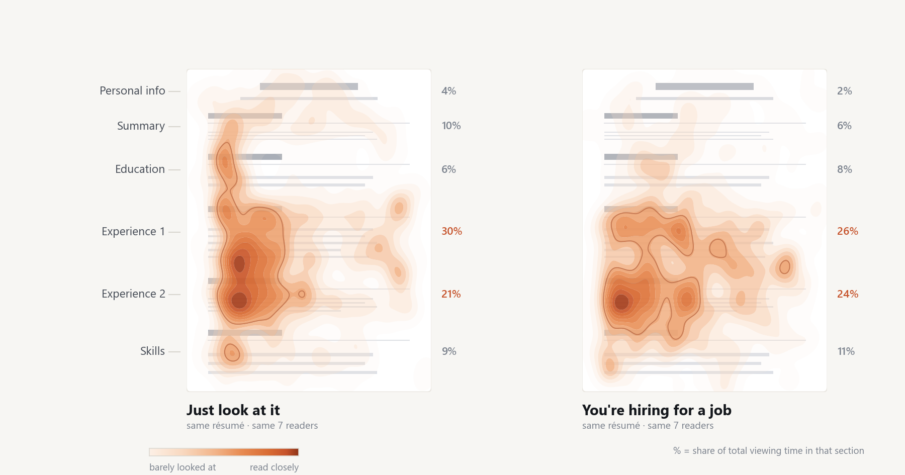
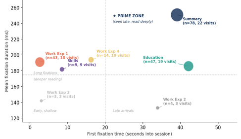
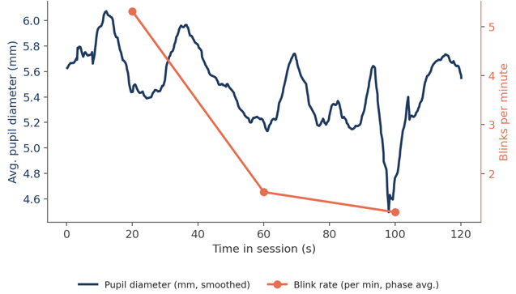
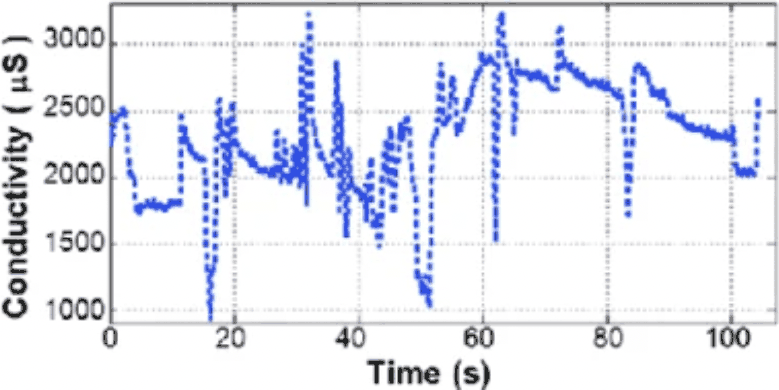
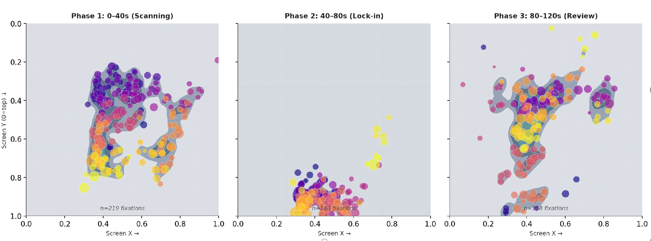

Powered by data, grounded in neuroscience. We measure how your audience actually reacts to what you create.
No AI shortcuts. Just real intelligence, real science.



Everyone's using it. It only knows what already exists — so it makes everyone sound the same.
What you need isn't easier content. It's knowing how your audience actually reacts to it.
We take a unique, tailored, and scientific approach to help you create content your audience will actually notice, remember, and act on.

EnlargeEvery fixation mapped — what draws attention, what gets skipped, and what is truly read. Change the reader's task and the map moves with it.

How long and how deeply each element is read — and which zones arrive early and hold the eye.

Pupil dilation and blink rate track cognitive effort across the session, and where engagement peaks.

We use galvanic skin conductance (GSC) to measure real-time changes in arousal — giving insight into where, when, and how a human reader responds to your content.

Reading is not one event. Gaze density separates the opening scan from the lock-in that follows and the review at the end — so a recommendation can target the phase where the decision is actually made.
Above is a snapshot of our analytic pipeline for your content.
We combine state-of-the-art neuroscience technology with proprietary analytics to uncover actionable insights that help you create content that captures attention, drives memory, and inspires action.
25 years studying cognition, language, and media — personally designing a tailored study for your project.
No templates, no recycled playbooks, no assumptions — a real experiment with human evaluators, designed around your content and your audience.
We measure real human response — then re-test with humans again, so an improvement is demonstrated rather than asserted.
What matters most is how your target audience perceives your content — not what you intended to communicate.
We design a tailored neuroscientific study to measure and prove how your target perceives your content — real people, not a model.
We run an in-depth analysis of the study data to uncover actionable insights and recommendations.
Re-measured and tested on your audience, so the gain is shown — not claimed.
See what your audience is really doing with your content. We show you the science — and the value.
Join the ones ahead →(Claim Your Free $39.99 Attention Heatmap)